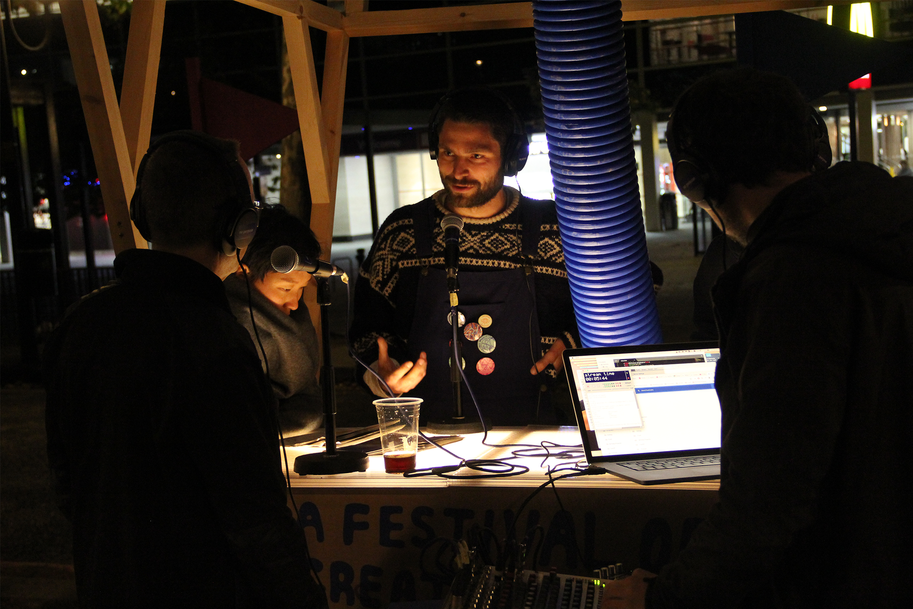
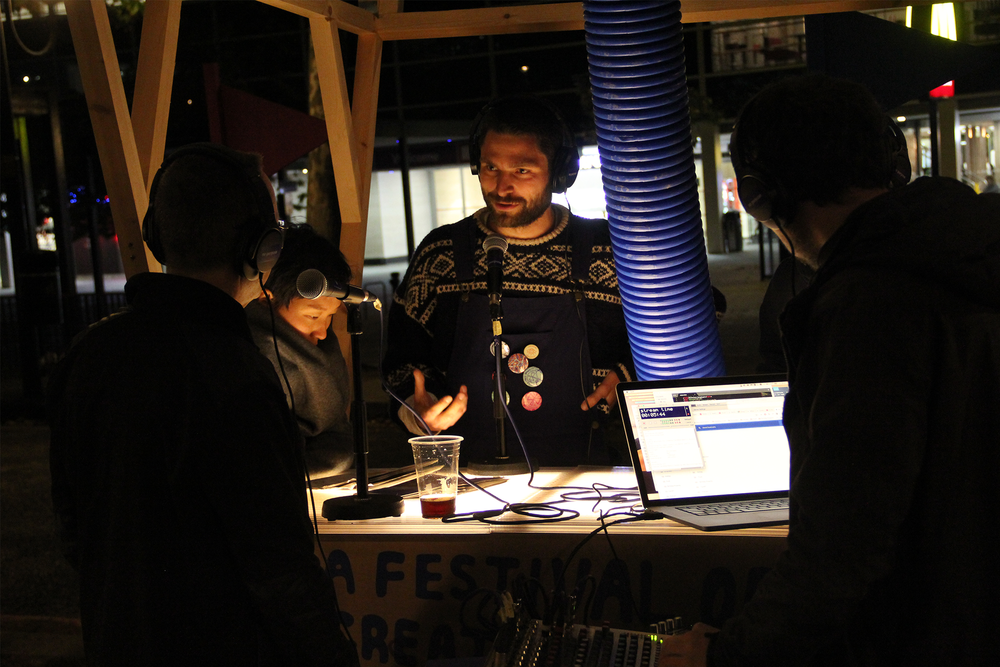

Boulevard Broadcast
Developed with No Purpose collective for A Festival of Creative Urban living by Raumlabor Berlin. Boulevard Broadcast was a mobile radio station with the unique ability to pick up signals from the future and broadcast to the present. Cycling through the surrounding area it expanded the terrain of the festival beyond the central strip. The absurd cycling structure was used to host interviews, workshops and karaoke nights, which all broadcast in a daily radio show; exploring fictional narratives about future living in Milton Keynes. The project culminated in a ‘call to action’ parade, living out the fictional narratives developed during the festival.
Concept Design, Radio Hosting
With: No Purpose and Raumlabor Berlin
For: Milton Keynes Council

 
